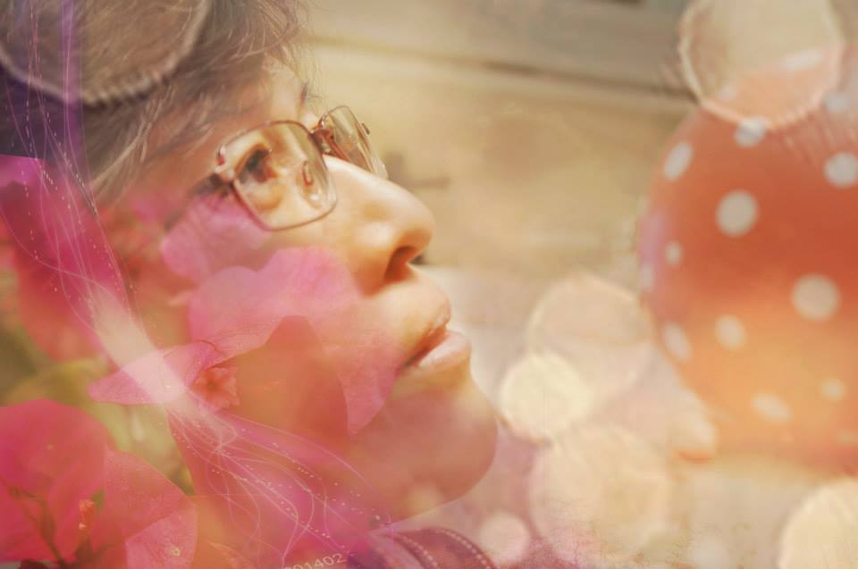

一個人的旅行
自助旅遊會發生很多意外的驚喜,走在路上說不定會聽到台灣的語言,在餐館也許吃到台灣特有的食物,在異地旅行的一個人,眼前看到的都是景象有時也會希望有朋友在身邊可以分享其中的喜樂或其他感受,出遠遊能夠讓人更知道自己想要什麼生活,又喜歡跟什麼人相處,漸漸地你會發現不一樣的自己,相對地也會拋出對自己更多的疑問!

我要出現底色啦~~~為啥不出現....
為什麼上一層沒辦法出現底色??@@我要粉膚色辣~~~